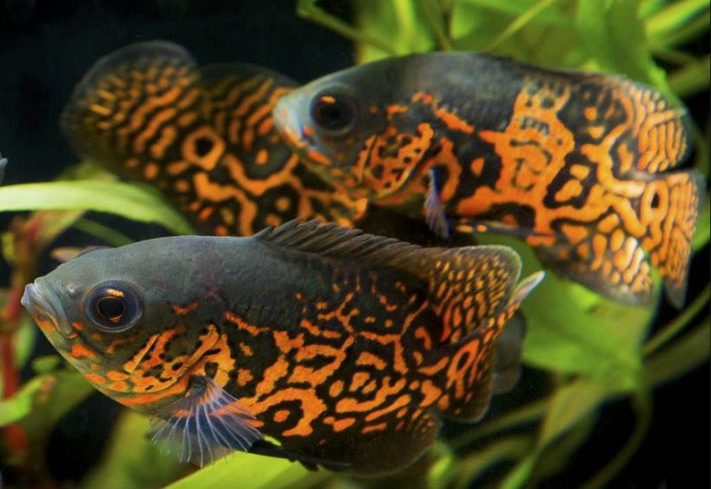

Ikan Predator Oscar
Masih tergolong keluarga Cichlidae, ikan pemangsa ini banyak ditemukan di Amerika Selatan, tepatnya di Sungai Amazon, Brazil. Meskipun enggak sepopuler ikan jenis lain, ikan oscar sangat menarik warna yang bervariasi.
Oscar batik, misalnya, berwarna hitam dengan guratan oranye yang menyala. Ada juga ikan oscar lemon yang berwarna kuning mencolok dengan secuil warna putih dan hitam di ujung siripnya. Oscar albino, yang paling mahal dan cantik, memiliki warna putih dengan motif emas kemerahan yang memukau.
Perawatan
Habitat asli ikan oscar tersebar luas di seluruh wilayah Amazon termasuk bagian dari Venezuela, Bolivia, Kolombia, Ekuador, Brasil, Peru, Guyana Prancis, Argentina, dan Uruguay. Ikan ini telah ditemukan di banyak sistem sungai di seluruh wilayah Amazon, dan populasi liar kecil juga telah ditemukan di Amerika Serikat dan Singapura. Spesimen oscar hasil tangkapan liar kadang-kadang tersedia di pasaran, tetapi oscar yang dibudidayakan secara komersial seringkali lebih diinginkan karena mereka lebih mudah beradaptasi terhadap parameter akuarium. Di alam liar, oscar cenderung mendiami perairan dangkal yang bergerak lambat. Jadi di akuarium rumah, ikan-ikan ini lebih suka filtrasi yang tidak menghasilkan arus yang kuat. Di sepanjang sungai-sungai di wilayah Amazon, oscar diketahui bersembunyi di antara akar-akar pohon yang tenggelam dan di bawah naungan yang disediakan oleh vegetasi kecil. Untuk memastikan oscar Anda tumbuh baik di lingkungan akuarium, sebaiknya tirulah kondisi ini di akuarium rumah Anda. Berhati-hatilah saat mendekorasi akuarium Anda karena oscar cenderung menggali tanaman hidup dan mengacak-acak akar dari substrat. Anda masih dapat mendekorasi akuarium oscar menggunakan beberapa elemen dari lingkungan asli. Anda harus berhati-hati ketika memilih dekorasi untuk memastikan Anda tidak membahayakan oscar Anda.
Reproduksi
Langkah pertama adalah pilihlah indukan Oscar yang bagus, agar dalam pemijahan nanti bisa menghasilkan bibit-bibit unggul. Pemilihan induk ini bisa dilakukan sejak si Oscar berusia 5 – 6 bulan. Karena ikan ini termasuk jenis yang memilah dan memilih pasangan lho. Nah, untuk membantu ikan tersebut menemukan pasangannya, kalian bisa menempatkan 5 calon pasang ikan ini dalam 1 wadah yang sama. Saat setelah menemukan pasangannya, tahap selanjutnya adalah pisahkan antara jantan dan betina dalam wadah yang berbeda. Dengan begitu akan memperlancar saat waktu kawin tiba.
Sebelum menempatkan 1 pasang ikan Oscar, siapkan tempatnya terlebih dahulu. Idealnya, pilihlah media/wadah yang berukuran minimal 1 m x 0,5 m x 0,5 m. Dalam wadah tersebut, di bagian dasarnya kalian siapkan bebatuan atau genteng. Hal ini dimaksudkan untuk memudahkan proses pemijahan. Lalu kalian bisa memasukan sepasang Oscar pada tempat tersebut. Tutuplah bagian atas wadah namun tak perlu total, agar si Oscar bisa melakukan pemijahan dengan tenang. Pemijahan ini berlangsung pada pagi dan juga sore hari, pun juga lansung dibuahi oleh pejantannya Aqua Friends. Setelah betina bertelur, pisahkan dengan pejantannya. Dan tempatkan pada aquarium/wadah lain yang berukuran paling tidak 50 cm x 40 cm x 50 cm. Dengan ketinggian air bisa mencapai 10 hingga 20 cm. Untuk telur-telur tersebut tidaklah lama, hanya sekitar 3 – 5 hari saja. Nah setelah anakan Oscar menetas, ikuti langkah di bawah ini.
Anakan Oscar membutuhkan makan saat usianya menginjak 4 hari Aqua Friends. Maka sebelum itu kalian tak perlu khawatir. Di usia 5 hari, kalian bisa memberikan makanan berupa rotifera. Dalam pemberian pakan ini, kalian bisa memberikannya 3 hingga 4 kali sehari. Dan tidak boleh telat, pasalnya saat ikan Oscar masih anakan, mereka bersifat kanibal dan bisa memakan saudaranya sendiri. Setelah berusia 10 – 14 hari, kalian bisa memberikan kutu air ataupun cacing sutra pada anakan ikan ini. Saat usianya sudah menginjak kurang lebih 1 bulan, kalian bisa memindahkan anakan ikan Oscar pada kolam yang berbeda untuk memperlancar pertumbuhannya Aqua Friends.